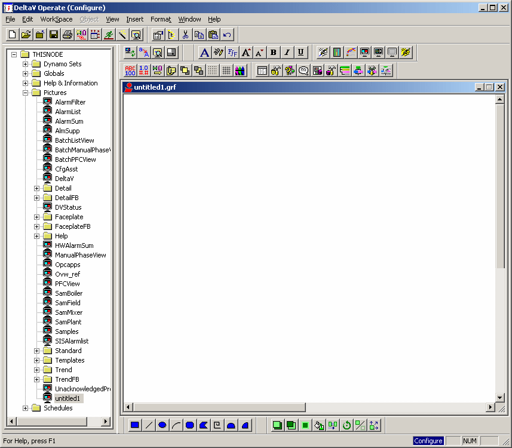

The system tree and work area
The user interface for DeltaV Operate in configure mode is similar in appearance to the DeltaV Explorer. It consists of a window divided into two main panes. Across the top are a title bar, menu bar, and tool bar. The left pane contains the system tree hierarchy for files on the local node. The system tree includes folders for dynamo sets, globals, help, pictures (including template files), and schedules. DeltaV Operate provides numerous sample picture files that can be used as a basis for developing a wide variety of operator graphics.
The right window pane, called the work area, displays the contents of the DeltaV Operate or ActiveX document selected in the left pane. When you open a document, DeltaV Operate displays the file in the work area and automatically activates the tools needed to modify it. For example, if you open a picture file, toolbar buttons for creating and editing operator graphics appear. To open a document or picture, double-click on its name in the system tree or right-click and select Open from the context menu. To open an ActiveX document, right-click and select Edit Script from the context menu.

The System Tree
The DeltaV Operate system tree provides many standard pictures and objects that can be used as is or modified. For example, the dynamo sets folder contains hundreds of icons, symbols, and dynamic objects that can be placed in pictures to simplify and speed up the picture creation process. The Pictures folder contains templates for many kinds of faceplates and detail displays that can be easily modified to work in many process applications. The table below briefly describes the contents of the folders in the system tree.
Dynamo Sets |
Contains dozens of groups of predefined objects (such as symbols, pipes, motors, and building icons) that can be used in picture creation. Some sets of dynamos (such as TanksAnim1) contain objects that have predefined animation properties (such as using color to show changing tank level). |
Globals |
Contains global variables, user-defined variables, and other system variables that are used in DeltaV Operate. Only advanced users with a solid understanding of their DeltaV application, DeltaV Operate, and Visual Basic should attempt to make changes to the default settings for predefined variables. |
Help & Information |
Provides access to DeltaV Electronic Books (also available from the Help menu). Also provides access to the Automation Interfaces Help for the Visual Basic language. |
Pictures |
Stores user-defined operator pictures. Also contains dozens of sample pictures that can be modified and used, including many templates for faceplates, detail displays, alarm summary pictures, and so on. |
Schedules |
Contains user-defined schedules. |
System Tree Paths
A DeltaV Operate file path is associated with each folder in the system tree. These paths indicate where the files reside on the node. The paths are defined initially in the System Configuration Utility (SCU). To see the file path, click on a folder (or file, such as a picture file) and select Properties (or File Properties) from the context menu.
Moving, Resizing, and Hiding the System Tree
By default, the system tree is docked on the left side of the screen. You can dock it on the other side of the screen by dragging it. Likewise, if you want more screen space for your pictures and schedules, you can set the system tree to float on top of your open documents by clicking on one of its edges and dragging it away from the side of the screen. You can resize the system tree while it floats by dragging any of its edges.
When the system tree is docked, you can only resize its width. If resizing the system tree does not give you the space you need, you can hide the tree completely. To hide the system tree (or restore it if it is hidden), select System Tree from the Workspace menu.
Dragging and Dropping Files
With DeltaV Operate, you can copy and move objects by dragging and dropping them into open documents. In general, you can drag an object or a dynamo from an open picture, an open Dynamo set, or the system tree and drop it into an open picture, an open dynamo set, or a user-defined global file. Dragging from a dynamo set to a picture makes a copy of the dynamo in the new location, rather than moving the original. Dragging from one dynamo set to another moves the original.